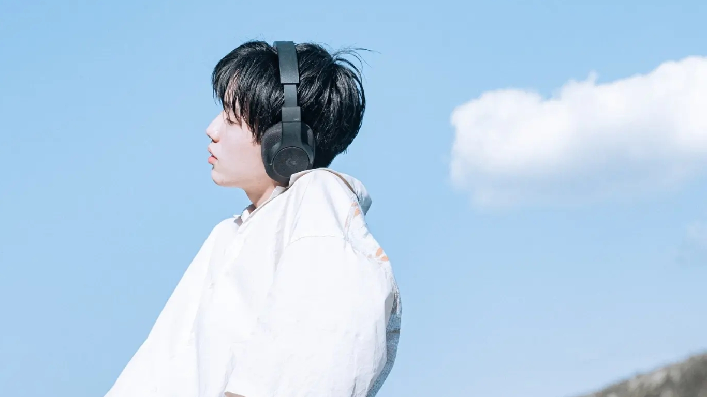

-

About Me
◇農業高校卒業後、IT・AIに興味を持ち、KCS鹿児島情報専門学校入学
◇将来【デザイン】?【IT】の時代がくると考え、ゲーム・CG科に編入
◇KCSに入学して3ヵ月後、アルバイトリーダーに昇格 -

Apparel Brand
◇自分自身に新しい価値を生み出したいと考え、アパレルブランドを設立
◇初月は売上僅かでしたが、独学で学んだSEO対策、マーケティング手法
を生かし、次月は売上3倍に上昇
◇現在はブランドのWEBサイト、カートシステムやデータベースの構築中 -
Study & Learn
◇現在【基本情報技術者試験】と【MOS/Word】合格に向けて日々学習
◇株式会社財宝様に『この子はなんでもできる!』と思わせ、任された
仕事内容の一つ上のレベルで成果をだせるように日々努力
◇インパクトのある自分という商品を必要としている全国の方達に提供 -
Hobbies & Skills
◇幼い頃から音楽に囲まれ、興味をもち、KCSでは軽音部に入部
2年生に進級する際には軽音部の部長として活動
今年の文化祭は大成功を目標に日々チームのメンバーで練習
◇特技はバスケ、小学2年生の時から活動
県大会出場が決まる決勝まで突破